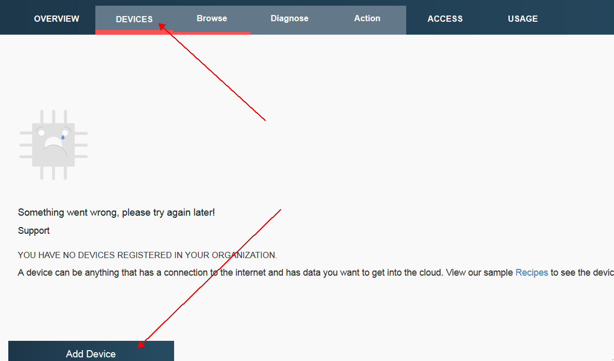
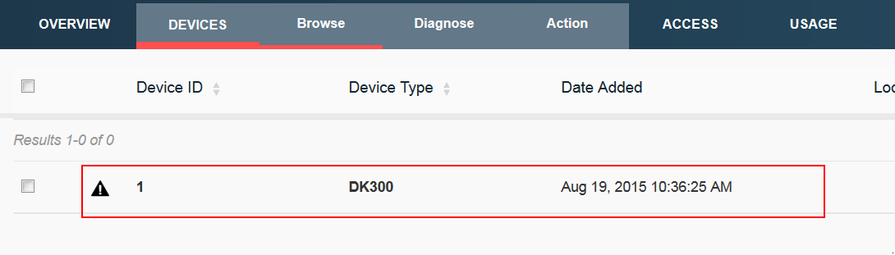

Open up your Bluemix application and navigate to the Internet of Things Foundation dashboard. From here we will begin to add our first device, in the navigation pane select "DEVICES" and then on the window that opens select "Add Device"
From here you will select "Create device type". This will take you to a page where you will give your new device a name and a description. Fill out both fields and select next.

Next they will give you a list of optional attributes, fill out any of these you would like, you always have the option of coming back and editing these later. After this you have the option to give any metadata for the device in JSON format, this is again, optional. When you're finished click "Create". This will take you back to the first screen you were on, and as you will notice the previously empty drop down box that lists devices should now have the one you created. Make sure it's selected and select "Next".

The next page will ask you for a Device ID as well as allow you to enter more optional information about your device. The Device ID is required so go ahead and fill that out (each device ID must be unique). Once you're done click next and you will see a screen that once again gives you the opportunity to enter meta data in a JSON format for the device, this is optional, once you are finished click next. Now you will be at a screen where you can either enter your own authentication token or click next and one will be generated for you. The final screen is a summary of everything you've chosen and entered, when you're satisfied with, select Add. Now when you look under devices you should see your new device registered, you can repeat these steps any time to create a new device, or quickly add a new device of the same type using what you've already created.
